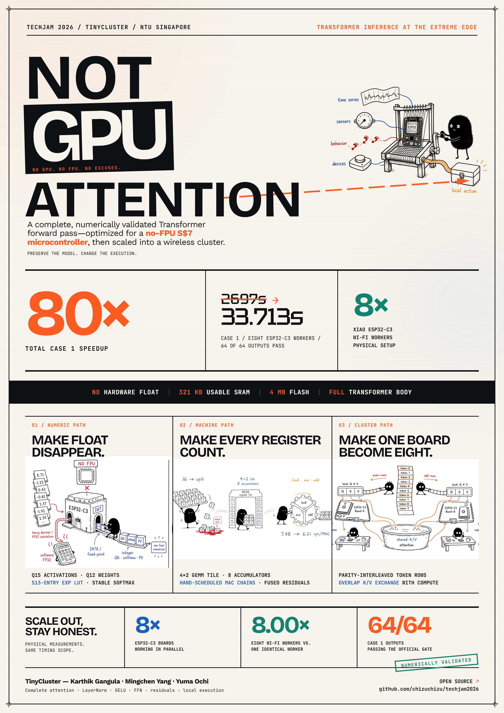

The benchmark asks you to make a Transformer layer fast on a GPU. We asked the opposite question — what is the smallest machine that can run it at all — and answered it on a 160 MHz RISC-V chip with no floating-point unit and 321 KB of RAM. One forward pass went from 42.15 seconds to 1.996. Then we built a cluster.
The official brief is unambiguous: optimise a fixed Transformer layer on a given GPU, submit GPU kernels, and report the speedup against a PyTorch baseline. We did not do that. It is worth saying so plainly before anything else in this report is read.
What we did instead was take the same fourteen shapes, the same reference implementation, and the same per-element accuracy gate, and ask a question the brief does not ask: how far down the hardware ladder does this workload still run? Not on a smaller GPU — on a microcontroller costing about seven Singapore dollars, with no floating-point unit, no DRAM, no operating system worth the name, and less memory than a single one of the benchmark's activation tensors.
The reason this is interesting is that a GPU makes the interesting constraints invisible. On an H200 the case-2 forward runs at under 1% model-FLOP utilisation and nobody notices, because it finishes in milliseconds either way. Move the same arithmetic onto a part with a 160 MHz single-issue in-order core and every decision that a GPU absorbs — where a tensor lives, what numeric format it carries, how many times a weight is read from flash — becomes measurable, and usually dominant. The workload stops being a throughput problem and becomes a memory and numerics problem.
This is a re-framing of the brief, not a fulfilment of it. We are not claiming a GPU kernel result. What we claim is a reproducible study of the same benchmark on hardware roughly twelve million times slower in peak arithmetic, where the answers are different in kind rather than in degree — and where 10 of the 14 official shapes still pass the gate.
There is a second reason, and it is the practical one. A cluster of eight of these boards costs about S$56 and draws a couple of watts. If a Transformer of this size can be made to run there, inference stops needing a datacentre for a whole class of embedded problems. That is a claim the benchmark cannot make on a GPU, because the GPU was never the constraint.
Everything in this report follows from four lines of a datasheet, so they are worth stating precisely before the engineering starts.
The board is a Seeed XIAO ESP32-C3, about the size of a thumbnail and about five dollars. There is no data cache — the 16 KB cache covers execute-in-place reads from flash only. IRAM and DRAM are aliases of the same physical SRAM pool, which matters later: you cannot buy instruction-memory speed by spending data memory, because there is only one pool.
For scale: the case-2 forward is 0.134 GFLOP of arithmetic over 398,592 parameters. At fp32 those weights are 1,594,368 bytes — they fit in flash with room to spare, and do not fit in RAM at all, four times over. That single fact shapes the entire implementation.
The Transformer reference is written in fp32. The chip cannot do fp32. Every add, multiply, divide and exponential in the reference becomes a call into libgcc's soft-float library, and those calls are not cheap in the way a cache miss is expensive — they are cheap operations that have simply become a hundred times slower.
Profiling the untouched implementation made the consequence concrete. Of the 42.15
seconds a single forward took, 30.09 seconds — 71.4% — was attention,
and essentially all of it was soft-float: 16.7 million fp32 dequantise-multiplies in the
QK dot products, about a million expf calls in the softmax, and 8.4 million
fp32 multiply-accumulates in the PV product.
The GEMMs were already running on an integer path and were still slow for a different reason: measured at 36 cycles per multiply-accumulate where an ideal int32 MAC loop on this core should cost 5–8. That is a code-generation and register-pressure problem, not a numerics one, and it needed a different fix.
The linker grants the application 321,296 bytes. A single 128x128 fp32 activation is 65,536 bytes. The reference implementation wants several of them live at once, plus per-head projections, plus quantisation scratch — and the framework, the WiFi stack and the stack itself all come out of the same pool.
Three consequences run through the whole project.
Weights never enter RAM. They are embedded in the flash image and read through the 16 KB execute-in-place cache as the kernels stream them: 786,432 bytes of int16 weight matrices per forward, derived from measured call counts. Any scheme that required a resident weight matrix was off the table from the start.
Buffers are aliased, not allocated. The final layout re-uses the same 64 KB regions under different types at different points in the forward — the attention context is an int16 view of a buffer that held fp32 a moment earlier. Adding a buffer was almost never an option; the residual path was eventually carried as int32 inside a union with the fp32 view precisely so it would cost zero new bytes.
Some shapes simply do not fit. Case 9 (H=1) and case 10 (H=2)
failed to link — the linker reported dram0_0_seg overflowed by 73,072 bytes
and by 23,920 bytes respectively. Per-head state scales with S·HD, so
fewer heads means larger per-head buffers. Both were eventually made to fit by patching
the SDK's own static allocations, which is discussed in section 8.
Adding WiFi to a compute node costs roughly 85,500 B of static DRAM plus about 69 KB of heap. The full-sequence firmware needs 274,564 B. Together that is about 429 KB against a 328 KB budget — short by roughly 100 KB. A board could compute, or it could talk, but not both, until the schedule was rewritten.
If one board is too small, use several. But the moment a forward is split across boards, the parts have to exchange activations — and on this hardware the link is slower than the arithmetic it is meant to accelerate.
The numbers set the scale. A case-2 forward has to move 64 KB in and 64 KB out. Over USB CDC, paced to the rate the chip's native USB will accept without dropping bytes, that is about 1.3 seconds per input — comfortably longer than the 1.996 second forward it feeds. Transport was 51% of end-to-end time in the two-board batch runs.
So the radio had to be made fast. We built a dedicated link benchmark to find out what an ESP32-C3 pair can actually sustain, and the answer depended almost entirely on configuration rather than on protocol design.
Even at 197 KB/s, a naive split loses. The first working two-board case-2 build used blocking TCP and spent 1.83 seconds of a 4.64-second forward waiting on the link. Streaming it per attention head over TCP made it worse — 2.57 to 3.38 seconds blocked — because the per-transfer overhead multiplied.
What worked was UDP with negative-acknowledgement recovery, streamed per head, on a dedicated link task, so that a board releases each head's K/V block the instant it is projected and only blocks when attention actually needs the peer's. That took time spent waiting from 1.83 seconds down to 5–88 milliseconds against roughly 1.6 seconds of raw transfer — the transfer did not get faster, it got hidden.
| link strategy | wall time | blocked on link |
|---|---|---|
| blocking TCP, whole 32 KB block | 4.64 s | 1.83 s |
| TCP streamed per head, overlapped | 5.87–6.62 s | 2.57–3.38 s |
| UDP + NAK, streamed per head | 3.06 s | 0.003–0.032 s |
Measured on the same two boards on opt18-era kernels; the wall times predate the final kernel work, so compare the columns to each other rather than to the headline figure.
Case 2 — one input, 128 tokens, 128 dimensions, 4 heads, 4 layers — is the shape everything else was built on. It is the only case whose baseline is a real measurement rather than a projection, and it is where every technique was developed and gated before being applied elsewhere.
The work falls into five families, and they are worth separating because they attack genuinely different costs.
The largest single win, and the obvious one once the profile existed. QK dot products became int64 accumulations with the dequantisation scale folded into a single fp32 multiply per logit. The softmax exponential became a 513-entry int16 lookup table with 7-bit linear interpolation — and then, one step later, an all-integer table index: a single Q32 fixed-point multiply replacing an int64→float conversion, two fp32 multiplies and a float→int conversion, about 450 cycles reduced to one multiply. That step alone took the exp stage from 194.8 to 23.2 µs per call. The PV product went last: rescaling each softmax row so it sums to approximately 32,767 keeps the accumulation inside int32, so each element costs one 16x16 multiply with no 64-bit accumulate.
Measured at 36 cycles per MAC at the start. The progression — core
through core5 — is entirely about register tiling: reuse each fetched weight
across more output rows, then reuse each activation across more output columns, then
hoist loads across a K-pair to hide flash latency. The instructive failure is
core4_v2, which needed roughly 36 live registers against the RV32IMC ABI's
28 and spilled on every iteration. core5 uses a smaller 4x2 tile, fits in
about 20 registers, and runs faster despite doing less per iteration: 7.48 to
6.21 cycles per MAC. Every kernel in the chain is bit-identical to its
predecessor, because the accumulation order never changes.
The recurring discovery was that the scaffolding around the arithmetic cost more than the arithmetic. Separate amax-scan, quantise and staging passes over 64 KB buffers were removed one at a time by fusing them into the producer: GELU folded into the FFN quantisation; LayerNorm's output scan replaced by an analytic bound on the maximum, so the scale is known before normalising rather than after; attention writing Q15 context directly so the output projection's quantise step disappears entirely.
Once the C kernels were at the register limit, the remaining wins were scheduling ones the compiler would not make. The head-GEMM inner loop became 28 instructions per 8 MACs with a read-after-write distance of 8 — far enough that the multiplier never stalls. A C fallback is kept for every assembly path so the host tests still build.
The last floating-point object was the residual itself, and it was forcing three costs per layer: float GEMM epilogues, separate residual-add passes, and a float quantise inside every LayerNorm. Carrying it as int32 at a fixed scale — inside a union with the fp32 view, so it cost no new memory — let the GEMMs accumulate straight into the residual at about 10 instructions per element instead of 268, and deleted the residual passes entirely. Accuracy improved.
The cumulative effect on utilisation is the cleanest summary: model-FLOP utilisation went from 2.0% to 42.2% of the board's derived peak, and held within 0.1 percentage points across cases 1 through 5.
An optimisation log that records only the wins is a sales document. Several failures here changed the design more than the successes did.
Thirteen of the fourteen cases have a batch dimension greater than one. That single fact splits the parallelisation problem cleanly in two, and the two halves behave nothing alike.
The batch case is as good as parallelism gets. The boards share no state, exchange
nothing during a forward, and the speedup is exactly min(B, N). Measured on
eight physical boards over WiFi: 8.00x for cases 1, 4 and 5, with 213 of
213 forwards passing the gate and zero failing elements. Case 3 saturates at 4.00x
because B=4 — four boards work and four sit idle, which we report as 4.00x rather than
counting the idle boards.
Case 2 is the interesting one, because B=1 means data parallelism has nothing to divide. The only remaining axis is the token dimension. Every operator in the case-2 body is per-token — LayerNorm, all four projections, both residuals, the FFN, GELU, the final norm — except causal attention, which needs every key and value at or before the current row. So each board takes half the token rows and the boards exchange one K/V block per layer.
A detail that matters more than it looks: rows are assigned by parity, not by cutting the sequence in half. Under a causal mask, row i does i+1 units of work, so a contiguous split would give one board 2,080 score rows and the other 6,176. The parity interleave gives 4,096 against 4,160 — a 1.6% imbalance instead of a 3x one.
This is the most honest number in the project, so it is worth explaining rather than rounding up. Three costs do not halve when the tokens do:
There is a further wrinkle worth recording: the same split measured 1.73x on earlier kernels. The partition never changed — the single-board baseline got 2.6x faster underneath it, so the fixed costs became a larger fraction of a smaller number. A parallel speedup is a ratio, and optimising the denominator makes it look worse.
Case 2 was the development shape. The question that decides whether any of this generalises is what happens when the geometry changes — and the answer was mostly determined by memory, not by arithmetic.
| case | shape (B,S,D,H,F,L) | baseline 1 board | optimised 1 board | 2 boards | 8-node WiFi | status | gate |
|---|---|---|---|---|---|---|---|
| 01 | 64,128,128,4,128,4 | 2,697.6 s est | 127.36 s | 63.7 s | 33.713 s | measured | 64/64 PASS |
| 02 | 1,128,128,4,128,4 | 42.15 s | 1.990 s | 1.276 s | 4.220 s † | measured | 25/25 seeds |
| 03 | 4,128,128,4,128,4 | 168.6 s est | 7.96 s | 4.0 s | 4.218 s ‡ | measured | 4/4 PASS |
| 04 | 16,128,128,4,128,4 | 674.4 s est | 31.84 s | 15.9 s | 8.438 s | measured | 16/16 PASS |
| 05 | 128,128,128,4,128,4 | 5,395.2 s est | 254.72 s | 127.4 s | 67.451 s | measured | 128/128 PASS |
| 06 | 10000,128,128,4,128,4 | — | — | — | — | partial | builds, host gate PASS |
| 07 | 64,128,32,4,32,4 | — | 30.427 s | 15.822 s | 3.963 s | measured | 64/64 PASS |
| 08 | 64,128,1024,4,1024,4 | — | — | — | — | not run | weights exceed flash |
| 09 | 64,128,128,1,128,4 | — | 138.027 s | — | 28.508 s | measured | 64/64 PASS |
| 10 | 64,128,128,2,128,4 | — | 138.536 s | 119.101 s | 29.793 s | measured | 64/64 PASS |
| 11 | 64,128,128,16,128,4 | — | 138.610 s | 206.354 s | 51.604 s | measured | 64/64 PASS |
| 12 | 64,32,128,4,128,4 | — | 33.879 s | 17.091 s | 4.282 s | measured | 64/64 PASS |
| 13 | 64,1024,128,4,128,4 | — | — | — | — | not run | activations exceed SRAM |
| 14 | 32,100000,1024,16,1024,2 | — | — | — | — | not run | impossible by ~4 orders |
All times are the device's own measurement of the complete four-layer body, excluding host serial transfer. † case 2 has B=1, so only one data-parallel node activates — this is the tiled single-forward time, not an eight-board speedup. ‡ case 3 has B=4 and saturates at four active nodes. Only case 2's baseline is a measurement; cases 1, 3, 4 and 5 were never run on the pre-optimisation firmware, so their baselines are projected as B x 42.15 s and marked accordingly.
The kernels were made shape-parametric, so cases 7 and 12 — which only shrink D, F or S — needed no new numerics at all. Case 7 (D=F=32) is small enough that its WiFi image links at 108,300 B of static RAM with no tiling required.
The head-count cases were harder, and in an unintuitive direction: fewer heads is worse. Per-head state scales with S·HD, so at H=1 the per-head buffers are eight times larger than at H=8. Cases 9 (H=1) and 10 (H=2) did not link — over by 73,072 and 23,920 bytes. Making them run meant going below our own code and shrinking the SDK's static allocations: the interrupt stack, the coredump stack, the process-status buffer. Case 9 now links at 273,180 B and runs; case 10 needed a buffer overlay and sits at 97.25% of the segment with 8,848 bytes to spare.
Case 11 (H=16) fit comfortably and is the counterexample that confirms the mechanism — more heads means smaller per-head state, 256,180 B and 78.2% of budget.
To fit WiFi alongside the model, a 16-row sequential tile schedule was added. It works — but a tiled forward takes 4.215 s against 1.990 s on the untiled USB build. Tiling is a memory enabler, not a speed optimisation, and it costs 2.12x per device. For case 11 the consequence is blunt: two tiled replicas are 1.49x slower than one plain board, and four only just cross over at 1.34x.
Three of the four failures are memory, and the arithmetic is not close. It is worth doing the sums explicitly rather than saying "too big", because the margin tells you whether more boards would fix it.
The firmware builds, links at 83.2% of RAM, and passes the host gate 50/50. The blocker is time: 10,000 forwards at 1.990 s is 19,900 seconds — about 5.5 hours of device compute, plus roughly 1.31 GB of serial transfer to feed it. We did not run it, and we do not claim it. With enough boards it is straightforwardly feasible; the project's own estimate is around 300.
D=F=1024 gives 25,208,832 parameters — 100,835,328 bytes in fp32, 32.1x the 3.1 MB app partition. Quantising to int16 halves it and leaves it 16x over. A single D×D projection matrix in int16 is 2 MiB, which is 6.5x the entire RAM budget, so no one weight matrix is ever resident. Compute is not the issue: 429.5 GFLOP would take about 1.8 hours at the measured rate. This one needs weight sharding across roughly 28–32 boards.
The weights are identical to case 2's and sit happily in flash. S=1024 is what breaks it: one S×D fp32 activation is 524,288 bytes against 321,296 of RAM — a single tensor exceeds the whole budget before anything else is allocated. The dense attention score matrix would be 4 MiB per head, 13x the segment. This is the case that genuinely needs online, block-wise attention that never materialises S×S, which we designed but did not implement.
One S×D fp32 activation is 409,600,000 bytes — 1,250x the SRAM, and about 100x the entire flash part. The KV cache across the batch is roughly 24 GiB. The dense score matrix for one head of one layer would be 40 GB. The arithmetic is 2.70 PFLOP, which at the measured single-board rate is 464 days. Storage alone would need something over 5,600 boards. This case is not a scaling problem; it is a different machine.
Two claims in this report are load-bearing — that it is fast, and that it is still correct — and the second is the one that makes the first mean anything.
The benchmark's own criterion, applied per output element:
|error| ≤ 0.002 or |error| ≤ 0.02 × |reference|. Note the
disjunction — it is not torch.isclose. The official harness runs 5
random trials; we run 25 seeded trials and require zero failing elements,
on the device and again on the host, in both the integer FAST path and a pure fp32 EXACT
path kept bit-identical throughout as a reference.
Across every case the worst device error observed was 1.46e-3 against a 2e-3 tolerance — a margin of about 1.4x maintained through 24 numeric changes. Many individual steps are stronger than the gate: six of the kernel rewrites are bit-exact against their predecessors, verified element by element rather than statistically.
One thing worth being clear about: the benchmark ships no dataset and no trained weights. The model is built from seeded random values, so "correct" means matching the PyTorch reference on those same random weights. There is no accuracy claim about a task here, only an equivalence claim about arithmetic.
Halfway through, the measurements themselves became the weak link. The per-op timings in the optimisation log were transcribed by hand from serial output; every memory figure was copied out of the build summary; the flash-traffic number was arithmetic on assumed call counts. So we built tinyprof, an operator-level profiler for this board, and pointed it at both firmwares.
It found three things immediately. Zones were timed with a 1 µs timer and discarded when they rounded to zero, so the residual-add op was absent from every profile and its sibling reported 2 calls out of 12 — fixed by timing with the cycle counter at 6.25 ns. Two ops were nested inside others and being double-counted in the rankings. And a 32 KB scratch buffer was missing from the memory census, caught by cross-checking the firmware's own declaration against the linked ELF.
It also reproduces the previously hand-computed 768 KiB/forward of flash traffic from measured call counts — and finds 9,216 bytes of LayerNorm parameter reads the hand calculation had missed.